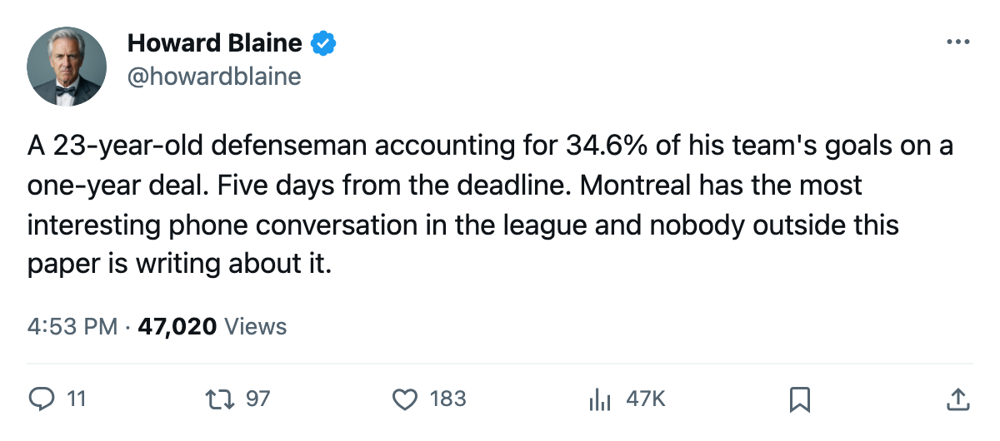

34.6 Percent: Mike Komisarek carries nearly a third of Montreal's offense on $1.10M with one year left
The Canadiens have 211 goals. Seventy-three of them ran through a 23-year-old defenseman the Book puts at 74.
 Howard BlaineSenior writer, The Blaine Rankings · The Hockey Gazette
Howard BlaineSenior writer, The Blaine Rankings · The Hockey Gazette
Mike Komisarek81 has 73 points in 71 games.  Montreal Canadiens has scored 211 goals. The Bureau's arithmetic puts his share at 34.6 percent of everything Montreal has managed this season, a figure no other defenseman on the roster comes near and one that places him in a category the league has seen perhaps twice this year among blueliners.
Montreal Canadiens has scored 211 goals. The Bureau's arithmetic puts his share at 34.6 percent of everything Montreal has managed this season, a figure no other defenseman on the roster comes near and one that places him in a category the league has seen perhaps twice this year among blueliners.
At 23, on a $1.10M cap hit with one year left on his contract, Komisarek is five days from a trade deadline that the calendar puts on March 19, with the Canadiens at 18-41-5 and minus-53 in goal differential, 17 points back of 8th in the Eastern Conference.
The jump from 3 points to 73
Last season Komisarek played 24 games and recorded 3 points on 11.8 minutes a night. This year he plays 29.9, has 12 goals and 61 assists, and carries 31 penalty minutes, the least physical production of any man logging that ice time on a roster that is already built around goaltending and a 37-year-old left winger.
| season | GP | G | A | PTS | PIM | MPG |
|---|---|---|---|---|---|---|
| 2003-04 | 24 | 1 | 2 | 3 | 6 | 11.8 |
| 2004-05 | 71 | 12 | 61 | 73 | 31 | 29.9 |
The Book has him at 74 today, 3 below his base grade of 77, with potential pegged at 90. The Bureau's Development Index has him up 6 on the season. His strongest attributes are his check at 84, his speed at 81, and his puck sense at 80. His weakest are his faceoffs at 52 and his fighting at 51, which tells you what kind of defenseman he is: a puck mover who logs more ice than anyone else on the back end, with a point total that looks wrong for a man whose overall sits in the mid-70s.
The construction that makes the number possible
Montreal scores 211 goals on a payroll of $45.26M, the 3rd-lowest in the league, and draws 15,527 a night at $77. The club made $18.43M last season and sits at 55 points, 17 back of  Atlanta Thrashers for the final playoff spot in the East with 11 games left. Their best player on the Book is
Atlanta Thrashers for the final playoff spot in the East with 11 games left. Their best player on the Book is  Jose Theodore87 at 83. The next three are
Jose Theodore87 at 83. The next three are  Dwayne Roloson82 at 80,
Dwayne Roloson82 at 80,  Richard Zednik81 at 77, and three men tied at 73.
Richard Zednik81 at 77, and three men tied at 73.
Komisarek is not even the highest-graded defenseman on his own team on paper. The Book puts him at 74 and  Andrei Markov75 at 73, within one point. But Markov's production does not carry the same load because Montreal's entire offense is so thin that one man finding seams at 29.9 minutes a night registers as a third of the total output. The 34.6 percent reflects how few of Montreal's 211 goals come from anyone other than Komisarek; his teammates contributed 138.
Andrei Markov75 at 73, within one point. But Markov's production does not carry the same load because Montreal's entire offense is so thin that one man finding seams at 29.9 minutes a night registers as a third of the total output. The 34.6 percent reflects how few of Montreal's 211 goals come from anyone other than Komisarek; his teammates contributed 138.
What five days do to a contract like that
A 23-year-old defenseman with 73 points and a $1.10M cap hit on one remaining year is, in the arithmetic of a deadline, the most liquid asset on a club that has nothing else worth trading. Montreal is 17 points from a playoff berth with 11 games left. The Eastern Conference 8th spot belongs to Atlanta, which has a 14-point cushion on the Canadiens and its own deadline decisions to make with two expiring 100-point forwards.
The Gazette logged a prediction this week and will revisit it in April: Komisarek finishes the season with at least 80 points. He needs 8 more in 11 games, a pace of 0.73 per game against the 1.03 he has averaged all year. The margin is wide enough that the call only misses if he stops producing entirely, and the Development Index has him trending up.
The next five days will determine whether he is still in Montreal when the prediction resolves. The $45.26M payroll returns $18.43M in profit, so ownership can absorb a fire sale without a budget crisis. The 15,527 who show up at $77 a ticket will watch their best player decide whether this spring means something to them or to someone else's April.
